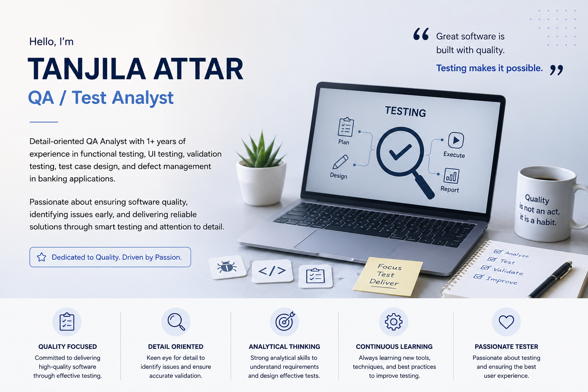

QA / TEST ANALYST
QA Analyst with 1+ years of experience, passionate about finding defects, improving test coverage, and ensuring reliable software through effective testing.

I am a QA / Test Analyst passionate about software quality and effective testing. I enjoy analyzing requirements, understanding business workflows, identifying gaps, and designing comprehensive positive and negative test scenarios.
Positive, negative, validation and end-to-end testing.
Field, button, message and UI behavior validation.
Detailed functional and validation test scenarios.
Defect identification, reporting, retesting and regression.
Functional and validation testing of clearing workflows.
Cheque inquiry, authorization, rejection and validation scenarios.
TD Receipt Issue/Re-Issue and transaction validations.
ATM, GL account, amount and denomination validations.
Currently developing my automation testing skills using Playwright, with a focus on UI automation, locators, assertions, positive and negative scenarios, and regression testing.
I use AI tools to support test scenario generation, edge-case identification, test-case review, documentation and automation learning.
Redmine · SQL · Eclipse · VS Code · Playwright · JavaScript / TypeScript · AI-assisted QA
Let's connect and discuss software quality, testing and QA opportunities.